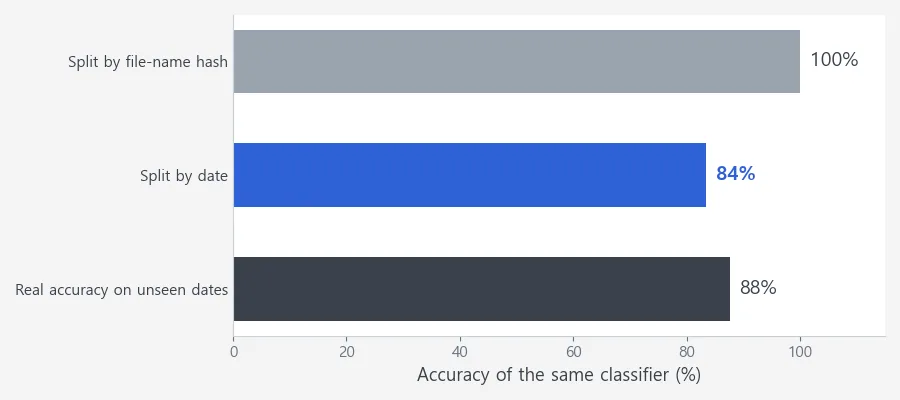

When an evaluation score looks too good
What looked wrong
While building a tool that learns alignment mark detection parameters from field images, I first split training and evaluation by the hash of the file name. The evaluation score came out better than expected. The better a score looks, the sooner I suspect it.
Cause: same-day frames landed on both sides
Equipment images differ a little from day to day in lighting, focus, and material condition, and frames taken on the same day are nearly identical. Splitting by file-name hash puts near-identical frames from the same day into both training and evaluation. The model is then not predicting images it has never seen, but images it has already seen.
I reproduced this gap with synthetic data. I made 50 frames a day for 25 days, with lighting a little different each day, and had the model decide whether a mark is present from the nearest training frame. The first 20 days were used for development, and the last 5 days were held back as “unseen dates” to measure real accuracy.

# Bad: split by file-name hash. Same-day frames mix into training and evaluation
is_test = zlib.crc32(name.encode()) % 5 == 0
# Changed: split by whole dates. Fix the last 4 of the 20 development days as evaluation and do not change them
test_days = sorted(set(days))[-4:]
is_test = day in test_daysWhat I changed
- Split the evaluation set by date, and fixed the evaluation dates once chosen. Every model change is compared on the same dates.
- Kept evaluation results as a history. If detections drop or false detections rise on the same evaluation set compared with before, the new model does not replace the current one.
- When I report a score, I also note how the data was split, which side the labels favor, and whether it has been applied in the field yet.
Takeaway
An evaluation set should be split to look like “the data we will meet next.” Equipment data clusters by date, tool, lot, and wafer, so a random split almost always inflates the score. Find the unit the data clusters by, split by whole units, and if the score still looks too good, suspect it once more.
The test uses synthetic data made to show the principle. It is not in-house images or real evaluation numbers.